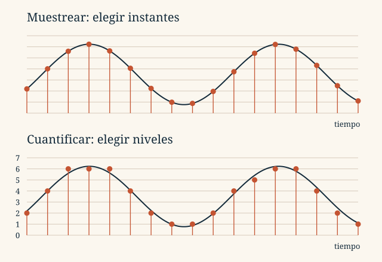

Tema 2 · Representación de la información
2.3
LECCIÓN 2.3
La onda es continua. Para guardarla elegimos cuándo medirla, con qué precisión representar cada medida y cómo codificarla.
Un micrófono es un transductor: convierte variaciones de presión sonora en una señal eléctrica analógica. Todavía no hay bytes. La conversión analógica/digital obtiene muestras, aproxima sus amplitudes y las codifica.
| Etapa | Pregunta que resuelve |
|---|---|
| Muestreo | ¿En qué instantes medimos? |
| Cuantificación | ¿Qué nivel representa cada amplitud? |
| Codificación | ¿Qué bits escribimos para ese nivel? |
Después puede aplicarse compresión. Al reproducir recorremos el camino inverso: decodificación, muestras PCM, conversor digital/analógico y filtro de reconstrucción. El altavoz transforma la señal eléctrica en variaciones de presión.
Tomamos una muestra cada período . La frecuencia indica cuántas muestras obtenemos por segundo en cada canal:
Con 44.100 muestras/s, el intervalo es aproximadamente 22,7 μs. Aumentar permite seguir variaciones más rápidas, pero produce más muestras.

Para una señal de banda base limitada a una frecuencia máxima , el límite de Nyquist–Shannon es . Usamos para evitar casos límite y disponer de margen de filtrado. El filtro antialiasing elimina componentes demasiado rápidas antes de muestrear.
Si no se respeta esa condición, diferentes señales pueden producir las mismas muestras: es el aliasing. Por ejemplo, senoidales de 9 Hz y 1 Hz coinciden en los instantes de un muestreo a 8 muestras/s. Aumentar los bits por muestra no resuelve ese problema temporal.
Explora. En el interactivo de Nyquist–Shannon, la onda está fijada en 1 Hz. Compara los muestreos a 8, 3, 2 y 1,5 Hz. En el caso de 2 Hz, observa que todas las muestras son cero para la fase mostrada; con 1,5 Hz, una onda de 0,5 Hz también pasa por las mismas muestras.
Cada muestra se aproxima a un nivel entre un conjunto finito. Con bits disponemos de niveles: 3 bits proporcionan 8; 8 bits, 256; 16 bits, 65.536.
Para el mismo intervalo de amplitudes, más bits permiten pasos más finos y menor error de cuantificación. No garantizan por sí solos una grabación perfecta: también influyen el ruido, el micrófono y el muestreo.
En PCM (Pulse Code Modulation), cada muestra se expresa mediante una palabra binaria. Si cuatro muestras cuantificadas son 3, 5, 3 y 1, con tres bits sus palabras son 011, 101, 011 y 001.
Cada segundo hay muestras por canal, bits por muestra y canales. Por tanto:
Datos PCM sin comprimir, sin cabecera. La duración se expresa en segundos.
Para audio CD estéreo: bit/s. Un minuto requiere 10.584.000 B = 10,584 MB ≈ 10,094 MiB.
| Configuración ilustrativa | Bits | Canales | Tasa | 1 minuto | |
|---|---|---|---|---|---|
| Telefonía G.711 | 8 kHz | 8 | 1 | 64 kbit/s | 0,480 MB |
| Ejemplo estéreo | 22,05 kHz | 8 | 2 | 352,8 kbit/s | 2,646 MB |
| CD | 44,1 kHz | 16 | 2 | 1411,2 kbit/s | 10,584 MB |
| Ejemplo a 48 kHz | 48 kHz | 16 | 2 | 1536 kbit/s | 11,520 MB |
Aquí kbit/s y MB son decimales. La fórmula PCM no calcula directamente el tamaño de un MP3. Para audio comprimido de tasa media , usamos : a 128 kbit/s, un minuto ocupa aproximadamente 0,960 MB, más la sobrecarga del archivo.
Un códec codifica y decodifica la información. Las familias del material representan distintas cosas:
| Método | Idea |
|---|---|
| PCM | Codificar la amplitud de cada muestra. |
| DPCM | Codificar diferencias respecto de una predicción; en el caso simple, la muestra anterior. |
| ADPCM | Codificar el error de predicción adaptando parámetros, como el paso de cuantificación. |
| A-law y μ-law | Compansión: más resolución relativa para amplitudes pequeñas. |
| FLAC | Compresión sin pérdidas de las muestras de entrada. |
| MP3, AAC, Vorbis | Compresión perceptual, habitualmente con pérdidas. |
WAV y AIFF suelen contener PCM. AU admite distintas codificaciones; AIFF-C también admite compresión. Ogg puede contener Vorbis y M4A suele contener AAC. La organización del archivo y la codificación del sonido son decisiones diferentes. Tampoco existe un porcentaje universal de compresión.
En una descarga obtenemos el archivo; en streaming comenzamos a reproducir mientras llegan más datos. El búfer acumula audio pendiente para absorber las variaciones de la red.
Si el búfer se vacía, la reproducción se interrumpe. Una reserva mayor tolera pausas más largas, a cambio de más espera inicial o retraso. La tasa útil media debe sostener el consumo y conviene disponer de margen; «necesitar el doble» no es una condición universal.
Las muestras también deben reproducirse con la frecuencia indicada: cambiar el ritmo modifica la duración y, en una reproducción directa, el tono. Practica estas relaciones en los ejercicios de sonido.
Fundamentos de Informática
Tema 2 · 2.3